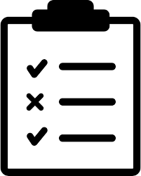
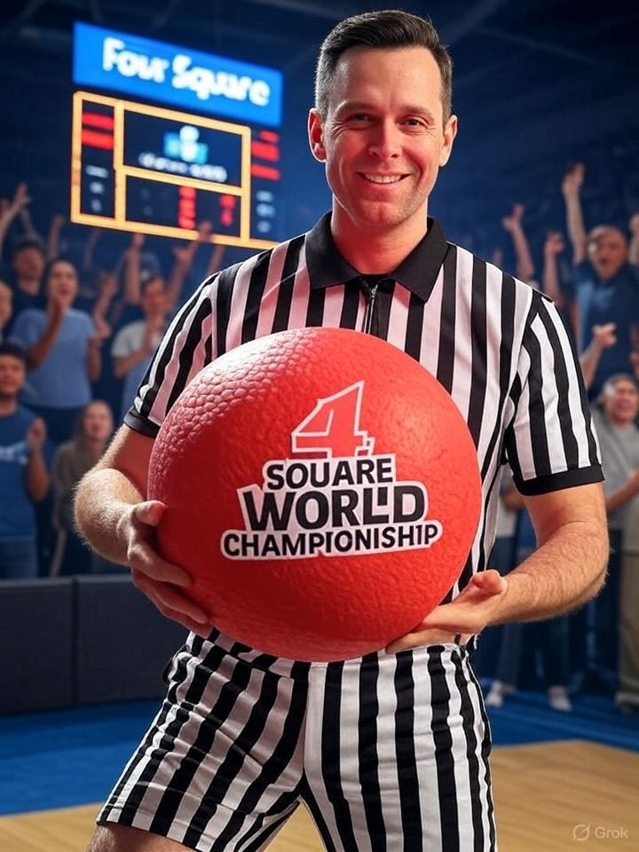

RULES OF FOUR SQUARE
Welcome to the Official Rules
Whether you're a seasoned pro or just starting out, this guide walks you through how to play, host, or judge Four Square at any level—from recess to world championships.

📘 Table of Contents
📜 Introduction
The rules below represent the official standards used at the Four Square World Championships, held annually in Bridgton, Maine.
For those interested in alternate styles or playground adaptations, we invite you to explore the "Other Rules" section at the bottom of this page.
🔴 Equipment
Ball: An 8.5-inch rubber playground ball inflated to 2 lbs.
- Four Square requires minimal equipment, making it easy to play almost anywhere.
- Games can take place on any flat surface—chalk-drawn courts, taped-off indoor/outdoor floors, or professionally painted courts.
- Any ball that reliably bounces can be used, though a standard playground ball (8.5-inch rubber) is typically preferred for consistency and control.
🟦 Court Specifications
Dimensions: A 16 x 16-foot square divided into four equal 8 x 8-foot squares, numbered 1–4 with 4 and 1 diagonal from each other.

Lines:
- All court lines are 1 inch wide.
- Outside lines are in-bounds; a ball landing on these remains in play.
- Inside lines (dividing squares) are out-of-bounds; a ball landing on these results in an "out.".
🚫 Out-of-Play Zone
To ensure fairness and promote returnable gameplay—and since overhand and closed-fist strikes are allowed where some Four Square rules allow only underhand hits—an Out-of-Play Zone is used to discourage unreturnable shots.
- The Out-of-Play Zone is a clearly marked square, extending 10 feet beyond each boundary line of the Four Square court.
- If a ball is legally hit into another player’s square and then bounces and lands into the Out-of-Play Zone, the player who struck the ball is out.
- The out-of-play zone line is in-play.
- This rule is designed to encourage all hits to maintain a level of reasonable and possible returnability. This also encourages safety for competitors and spectators.
- May only be used during the Championship Round, depending on venue or house regulations.

🎯 Objective
Be the last player standing! The goal is to be the last player remaining after all other players have been eliminated. When play begins, each square contains a player along with the players waiting in line. The player in square 4 serves the ball to square 1 who then hits the ball into a square other than their own. The hits go on until someone gets “out”.
👣 Player Positioning
- Players may move freely but must not interfere with other players’ ability to play the ball.
🎾 Serving
Adult Divisions (Men + Women)
The server (in Square 4) must place one foot on each of the outer lines of the square
The serve must be made underhand

Children Divisions (Boys + Girls)
The server (in Square 4) must have both feet within the designated serving zone

All Divisions:
🖐️ Ball Striking/Hitting
⚠️ Interference & Poaching
❌ Elimination
Each time a player is out, that player leaves the court and enters the line and, if applicable, all players advance to the higher numbered square. Square 1 is then filled with a new player.
🏟️ Environment
⚔️ Showdown
Disputes? Lets have the Four Square Gods settle it with a 1-on-1 showdown using just 2 squares. Higher square serves.
⛔ Prohibited Moves
👥 Divisions
🏆 Tournament Structure
Round 1 (Scoring Round):
Kids Divisions (Boys + Girls) play together; Adults Divisions (Men + Women) play together.
45 minutes of play across multiple courts.
Each "out" is tallied.
Round 2 (Semifinals):
Players return to where they left off in Round 1 — 25 minutes of play.
Kids Divisions (Boys + Girls) play together; Adults Divisions (Men + Women) play together.
“Outs” continue/carry-over from Round 1.
Top 8 players per division advance.
Championship Round:
Finalists compete in a “10-out” untimed tournament.
Pick-from-hat method to determine where players begin in squares/lines.
Out-of-Play zone utilized (if it wasn't already).
Square 2 is vacated when 3 players left.
When two remaining players: 1v1 in adjacent squares.
Last player standing is crowned champion.